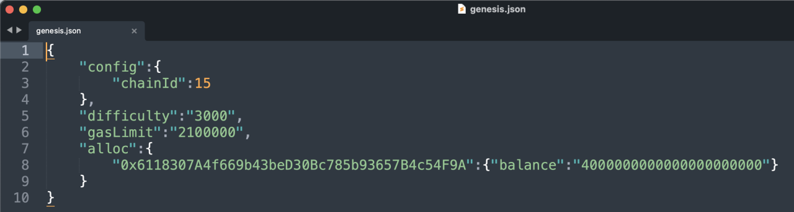
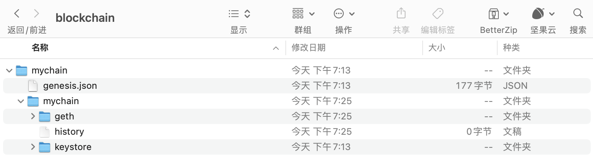
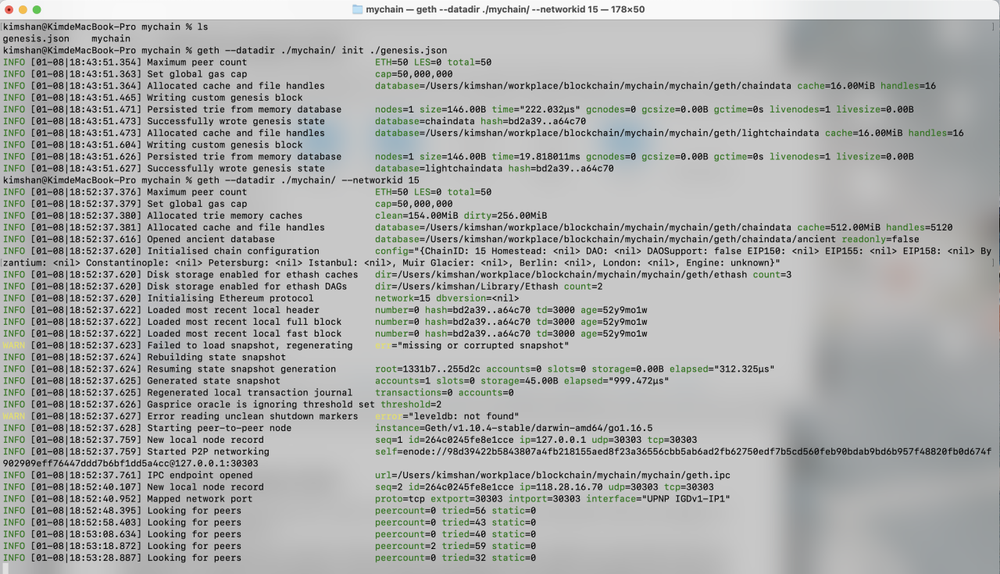
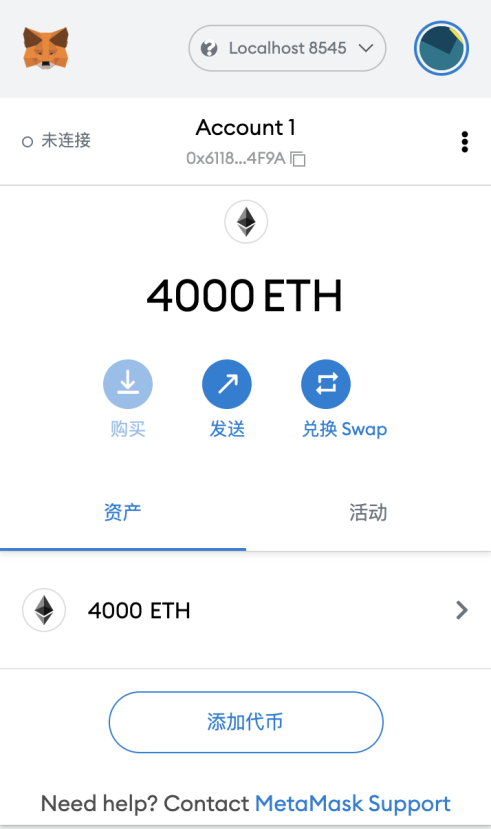

2022.2.27
客户端;Geth的安装和使用;搭建私链
【珍惜生命：以太坊是个规范，符合这个规范的程序，是以太坊客户端】
以太坊客户端是一个软件应用程序，它实现以太坊规范并通过p2p 网络与其他以太坊客户端进行通信。如果不同的以太坊客户端符合参考规范和标准化通信协议，则可以进行相互操作。
以太坊是一个开源项目，由“黄皮书”正式规范定义。除了各种以太坊改进提案之外，此正式规范还定义了以太坊客户端的标准行为。
因为以太坊有明确的正式规范，以太网客户端有了许多独立开发的软件实现，它们之间又可以彼此交互。
官方推荐，开发使用最多，别称，geth
地址:https://github.com/ethereum/go-ethereum
最轻便客户端，在历次以太坊网络攻击中表现卓越
地址:https://github.com/ethcore/parity/releases
地址:https://github.com/ethereum/cpp-ethereum
地址:https://github.com/heikoheiko/pyethapp
地址:https://github.com/ethereumjs/ethereumjs-lib
地址:https://github.com/ethereum/ethereumj
全节点是整个主链的一个副本，存储并维护链上的所有数据，并随时验证新区块的合法性。
区块链的健康和扩展弹性，取决于具有许多独立操作和地理上分散的全节点。每个全节点都可以帮助其他新节点获取区块数据，并提供所有交易和合约的独立验证。
不存储区块链的本地副本或验证块和交易。这些客户端一般只提供钱包的功能，可以创建和广播交易。远程客户端可用于连接到 现有网络，MetaMask就是一个这样的客户端。
不保存链上的区块历史数据，只保存区块链当前的状态。轻节点可以对块和交易进行验证。
优点
缺点
优点
缺点
优点
缺点
• 以太坊客户端提供了API和一组远程调用(RPC)命令，这些命令被编码为 JSON。这被称为 JSON-RPC API。本质上，JSON-RPC API 就是一个接口，允许我们编写的程序使用以太坊客户端作为网 关，访问以太坊网络和链上数据。
• 通常，RPC接口作为一个HTTP服务，端口设定为8545。出于安全原因，默认情况下，它仅限于接受来自 localhost 的连接。
• 要访问JSON-RPCAPI，我们可以使用编程语言编写的专用库，例如JavaScript的 web3.js。
• 或者也可以手动构建HTTP请求并发送/接收JSON编码的请求，如:
$ curl -X POST -H "Content-Type: application/json" --data \ '{"jsonrpc":"2.0","method":"web3_clientVersion","params":[],"id":1 }' \ http://localhost:8545
推荐源码安装，详细文件参考这里。
git clone https://github.com/ethereum/go-ethereum.git
cd go-ethereum
make geth
如果一切顺利，我们将看到 Go 编译器构建每个组件，直到它生成 geth 可执行文件:
build/env.sh go run build/ci.go install ./cmd/geth
>>> /usr/local/go/bin/go install -ldflags -X main.gitCommit=58a1e13e6dd7f52a1d5e67bee47d23fd6cfdee5c -v ./cmd/geth github.com/ethereum/go-ethereum/common/hexutil github.com/ethereum/go-ethereum/common/math
github.com/ethereum/go-ethereum/crypto/sha3 github.com/ethereum/go-ethereum/rlp github.com/ethereum/go-ethereum/crypto/secp256k1 github.com/ethereum/go-ethereum/common [...] github.com/ethereum/go-ethereum/cmd/utils
github.com/ethereum/go-ethereum/cmd/geth Done building. Run "build/bin/geth" to
launch geth.
$ ./build/bin/geth version
Geth
Version: 1.8.0-unstable
Git Commit: e37f7be97e47a032d723db16d8b195998547805a Architecture: amd64
Protocol Versions: [63 62] Network Id: 1
Go Version: go1.9
Operating System: linux GOPATH=/home/ubuntu/project GOROOT=/usr/local/go
$ geth --datadir . --syncmode fast
通常，在同步以太坊区块链时，客户端会一开始就下载并验证每个块和每个交易，也就是说从创世区块开始。 毫无疑问，如果我们不加 --syncmode fast 参数，同步将花费很长时间并且具有很高的资源要求(它将需要更多的 RAM，如果你没有快速存储，则需要很长时间)。
有些文章会把这个参数写成 --fast，这是以前快速同步模式的参数写法，现在已经被 –syncmode fast取代。
| 参数类型 | 意义 |
|---|---|
| --syncmode fast | |
| --syncmode full | 下载所有信息 |
| --syncmode light | 连区块都不下载 |
如果我们想同步测试网络的区块，可以用下面的命令:
$ geth --testnet --datadir . --syncmode fast
--testnet 这个参数会告诉 geth 启动并连接到最新的测试网络，也就是 Ropsten。测试网络的区块和交易数量会明显少于主网，所以会更快一点。但即使是用快速模式同步测试网络，也会需要几个小时的时间。
【我们除了要真正运行主链或测试链，否则不用同步这些东西】
(本节内容均为尚硅谷课程笔记摘录)
因为公共网络的区块数量太多，同步耗时太长，我们为了方便快速了解 Geth，可以试着用它来搭一个只属于自己的私链。
首先，我们需要创建网络的“创世”(genesis)状态，这写在一个小小的 JSON 文件里(例如，我们将其命名为genesis.json):
{
"config": {
"chainId": 15 // 注意这个chainId最好不要和主网和测试网一样
},
"difficulty": "2000", // 难度
"gasLimit": "2100000",
"alloc": {
// 对应的每个对象的余额
"7df9a875a174b3bc565e6424a0050ebc1b2d1d82": { "balance": "300000" },
"f41c74c9ae680c1aa78f42e5647a62f353b7bdde": { "balance": "400000" }
}
}
【创造链】要创建一条以它作为创世块的区块链，我们可以使用下面的命令:
geth --datadir path/to/custom/data/folder init genesis.json
【启动链】在当前目录下运行 geth，就会启动这条私链，注意要将 networked 设置为与创世块配置里的chainId 一致。
geth --datadir path/to/custom/data/folder --networkid 15
【启动+可以连接】不过经过测试，上边这个命令并不能让我本地的钱包通过local8584连接到私连上，需要这样做
geth --datadir ./mychain/ --networkid 15 console --rpc --rpccorsdomain "*" --allow-insecure-unlock
我们可以看到节点正常启动:
WARN [10-23|02:38:19] No etherbase set and no accounts found as default INFO [10-23|02:38:19] Starting peer-to-peer node instance=Geth/v1.8.0-unstable-e37f7be9/linux-amd64/go1.9
...
INFO [10-23|02:38:21] IPC endpoint opened: /home/ubuntu/project/go_ethereum_test/geth.ipc INFO [10-23|02:38:21] Mapped network port
proto=tcp
extport=30303 intport=30303 interface="UPNP IGDv1-IP1"
恭喜!我们已经成功启动了一条自己的私链。
【下边是运行记录】：！！！




Configure the Ethereum client geth to set up and run own private chain
Creat geth --datadir ./mychain/ init ./genesis.json Start geth --datadir ./mychain/ --networkid 15 console --rpc --rpccorsdomain "*" --allow-insecure-unlock
运行私链的时候同时加上console这个参数，就会开启Geth控制台。Geth Console 是一个交互式的 JavaScript 执行环境，里面内置了一些用来操作以太坊的 JavaScript对象，我们可以直接调用这些对象来获取区块链上的相关信息。这些对象主要包括：
| 命令 | 含义 |
|---|---|
| eth | 主要包含对区块链进行访问和交互相关的方法 |
| net | 主要包含查看 p2p 网络状态的方法 |
| admin | 主要包含与管理节点相关的方法 |
| miner | 主要包含挖矿相关的一些方法 |
| personal | 包含账户管理的方法 |
| txpool | 包含查看交易内存池的方法 |
| web3 | 包含以上所有对象，还包含一些通用方法 |
| personal.newAccount() | 创建账户 |
| personal.unlockAccount() | 解锁账户 |
| eth.accounts | 列出系统中的账户 |
| eth.getBalance() | 查看账户余额，返回值的单位是 Wei |
| eth.blockNumber | 列出当前区块高度 |
| eth.getTransaction() | 获取交易信息 |
| eth.getBlock() | 获取区块信息 |
| miner.start() | 开始挖矿 |
| miner.stop() | 停止挖矿 |
| web3.fromWei() | Wei 换算成以太币 |
| web3.toWei() | 以太币换算成 Wei |
| txpool.status | 交易池中的状态 |
实验日期：2022.2.18
自己的账户是0x6118307A4f669b43beD30Bc785b93657B4c54F9A,创世链的时候创建了2000以太
web3.fromWei(eth.getBalance("0x..."))
创建新账户,控制台输入personal.newAccount(), 然后会然我输入密码, 之后创建好了账户"0xfa2a67d6a6c0a0f6407b743ade22d80b5df38af8".
查看所有账户，就可以看到刚才创建的账户了，控制台输入eth.accounts, 控制台返回["0xfa2a67d6a6c0a0f6407b743ade22d80b5df38af8"].
由于账户在js里边是一个数组，我们要查看第一个账户的余额可以直接控制台输入eth.getBalance(eth.accounts[0]),这个账户是新创建的, 没有以太, 控制台返回了0.
【错误】我们尝试用原始钱包的账户为新创建的用户转账, 控制台输入eth.sendTransaction({from:"0x6118307A4f669b43beD30Bc785b93657B4c54F9A",to:eth.accounts[0],value:100000}),控制台会弹出错误:
Error: unknown account
at web3.js:6357:37(47)
at web3.js:5091:62(37)
at <eval>:1:20(13)
这是因为0x6118307A4f669b43beD30Bc785b93657B4c54F9A是创世的地址，不是geth有权限操作的，就像你不能随便拿别人的用户转钱。
我们用新创建的用户转钱前需要首先解锁账户,控制台输入personal.unlockAccount(eth.accounts[0]),输入密码,解锁。现在这是个可以交易的账户了。
使用刚创建的账户进行挖矿, 控制台输入miner.start(1),参数1就是不要停的意思。过一会儿输入miner.stop(),代表停止挖矿。然后输入eth.blockNumber,查看区块数量, 已经不是0了。这是控制台输入web3.fromWei(eth.getBalance(eth.accounts[0]))，发现这个账户已经拥有很多ether了。
将刚才在geth创建的账户到入MetaMesk钱包中,是哟哦那个MetaMesk导入钱包功能的通过json导入方法，然后json在自己的创建的链的keystore文件夹下。
现在我们用挖矿的账号，给初始账号转一些以太试一下, 首先进行账户的解锁,personal.unlockAccount(eth.accounts[0],"密码"),然后进行转账,eth.sendTransaction({from:eth.accounts[0],to:"0x6118307A4f669b43beD30Bc785b93657B4c54F9A",value:web3.toWei(10,'ether')}),结果还是报错 invaild sender。原来是视频中配置文件没配置全, 根据官网修改后的genesis.json:
{
"config": {
"chainId": 15,
"homesteadBlock": 0,
"eip150Block": 0,
"eip155Block": 0,
"eip158Block": 0,
"byzantiumBlock": 0,
"constantinopleBlock": 0,
"petersburgBlock": 0,
"ethash": {}
},
"difficulty": "2000",
"gasLimit": "8000000",
"alloc": {
"0x6118307A4f669b43beD30Bc785b93657B4c54F9A": {
"balance": "4000000000000000000000"
}
}
}
另外挖矿指令输入后出现WARN [02-18|16:06:09.012] Block sealing failed, err="unauthorized signer",最后发现原来是geth新版本只有在有提交的时候才会有矿挖，如果需要不停的挖矿要这样启动geth --nodiscover console --dev --dev.period 1
控制台输入eth.get，控制台会返回所有可以get的函数，比如eth.getTransaction("某哈希值")
最后通过MetaMesk连接私链的时候，出现“Invalid Sender”可能是因为没有设置好chainID:解决办法
目前总结：
创建私链：geth --datadir ./mychain/ init ./genesis.json
geth --datadir ./mychain/ --networkid 15 --http --http.api personal,eth,net,web3 console --allow-insecure-unlock 2>output.logpersonal.newAccount()geth --datadir ./mychain/ --networkid 15 --dev --dev.period 1 --password password.txt --http --http.api personal,eth,net,web3 console --allow-insecure-unlock 2>output.loggeth --datadir ./mychain/ --networkid 15 --dev --dev.period 0 --password password.txt --http --http.api personal,eth,net,web3 --http.corsdomain '*' console --allow-insecure-unlock 2>output.logweb3.fromWei(eth.getBalance(eth.accounts[0]))eth.blockNumberminer.start(1)miner.stop()personal.unlockAccount(eth.accounts[0])eth.sendTransaction({from:eth.accounts[0],to:eth.accounts[1],value:web3.toWei(1,'ether')})